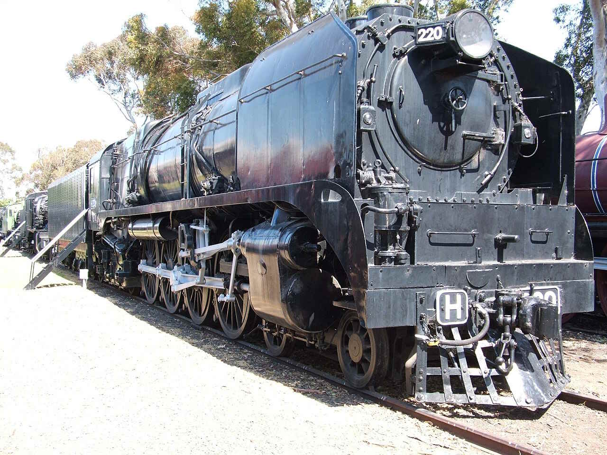
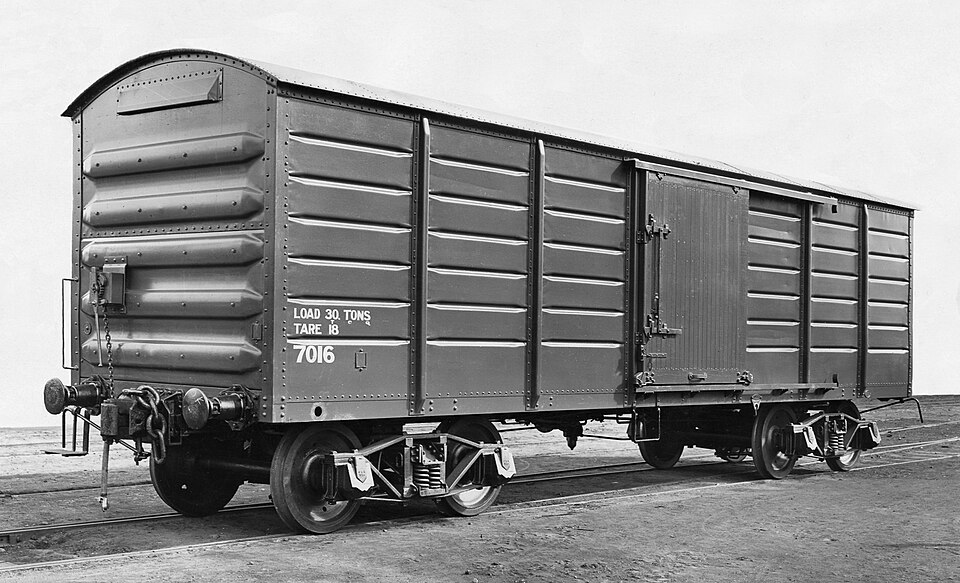
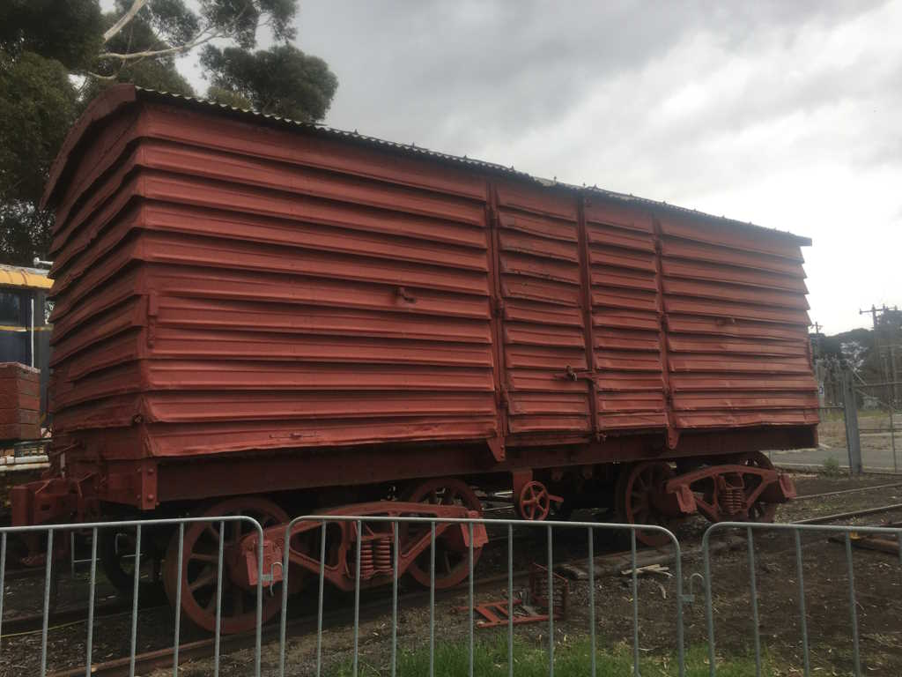
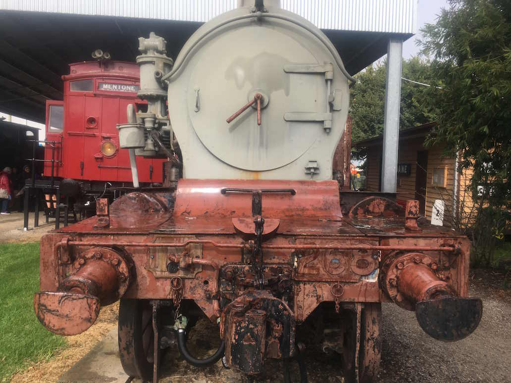

named as a parody of heavy harry (below) from the Newport Railway Museum! not the trainyards a museum down the road.

public domain image fromm wikipedia
I can't say what inspired this bit, but I think you can guess!

a basically ripped the box car off of this one from the public domain!!! public domain image from wikipedia (again.)
the Slam wagon isn't spammed everywhere, and is based on one from the Newport Railway Museum!

I quite like it!
Oh, oh! Also, besides the Trash Head train being bio/junk punk its based of this train below.
